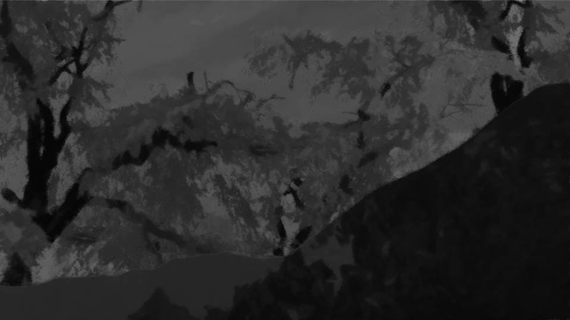
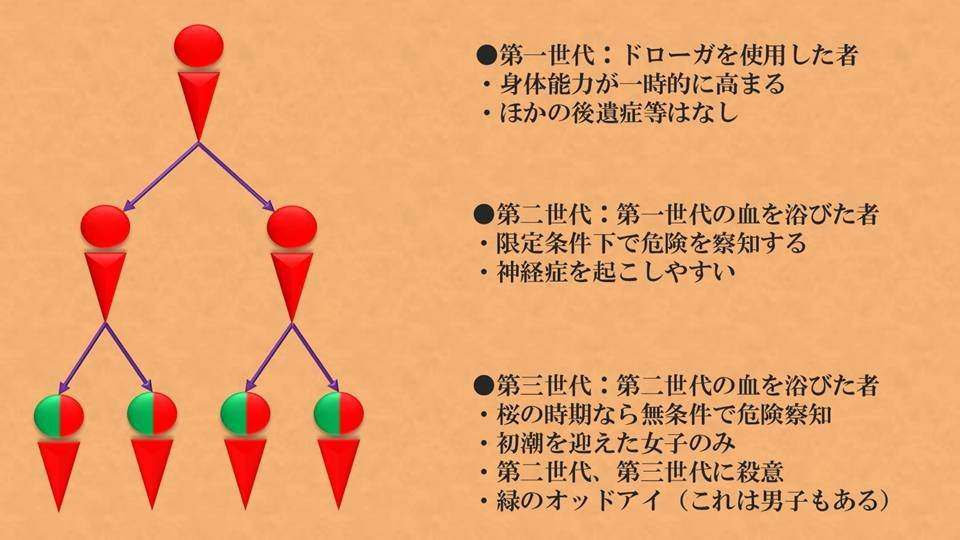
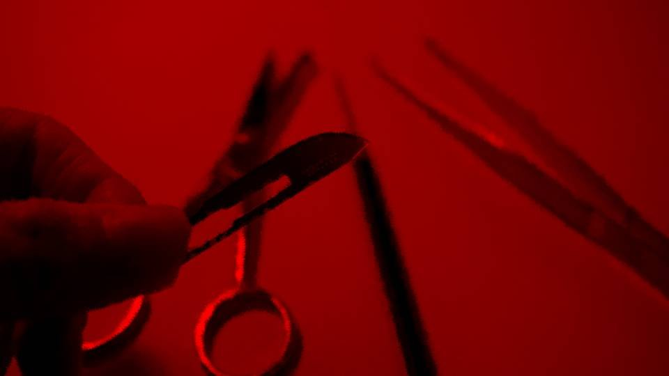
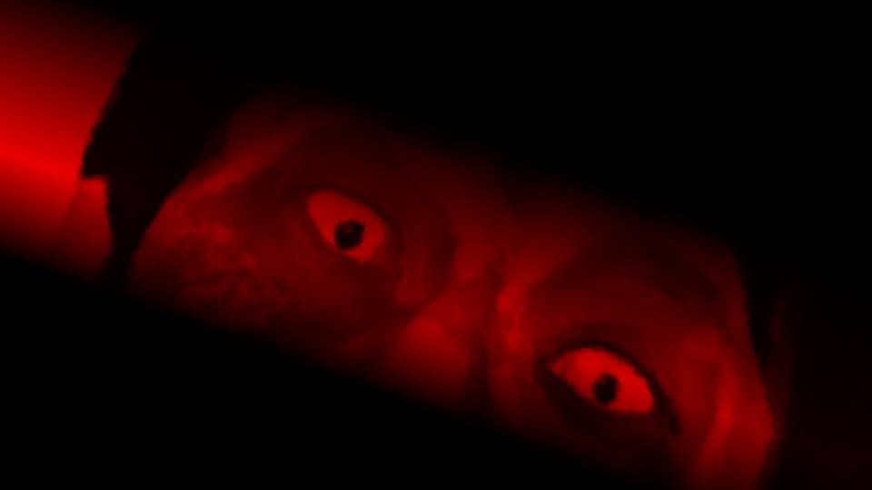

翠眼～盗感～

残りの調べるべき事項は、死月妖花の生態。
その前に……。
その前に……。

目の前には、地下から持って来た荒田の教典『セレジェイラの教え』がある。
これを見るのは子供の頃以来だが、改めて、思い当たる箇所を読んでもよく分からない。
これを見るのは子供の頃以来だが、改めて、思い当たる箇所を読んでもよく分からない。
要は新村儀之助が母国で体験した災害が書かれている。
ラッパが鳴ると死者がよみがえるとか、天変地異が起きて人や世界が終わるとか、そういう系の話だ。
もちろんこれは大昔の話だからすべてが呪殺事件に関わるとは思えない。
ラッパが鳴ると死者がよみがえるとか、天変地異が起きて人や世界が終わるとか、そういう系の話だ。
もちろんこれは大昔の話だからすべてが呪殺事件に関わるとは思えない。
でも、今ではアポカリプティックサウンドと言う名で、世界中で何度も観測されているらしい。
そんなに鳴っているのに、人間の滅亡どころか、死者がよみがえる様子はない。
にもかかわらず五島ちゃんがアポカリプティックサウンドについて言及したということは―― 何か考えがあるのだろうか。
そんなに鳴っているのに、人間の滅亡どころか、死者がよみがえる様子はない。
にもかかわらず五島ちゃんがアポカリプティックサウンドについて言及したということは―― 何か考えがあるのだろうか。

そう言えば、まだ五島ちゃんからの翻訳を読んでいなかった。
ともかく、これも確認しておかなくては。
ともかく、これも確認しておかなくては。

『猛き音と翠眼呪殺』
祀耀340年、殿下による大規模な花見が催されたそうだ。
だがその花見の目的は、ただ全国のやんごとなき人々に権力を見せつけるためではない。
なぜそう言えるかというと、殿下は荒田集落の桜をいくつか持ち去ってしまったからだ。
祀耀340年、殿下による大規模な花見が催されたそうだ。
だがその花見の目的は、ただ全国のやんごとなき人々に権力を見せつけるためではない。
なぜそう言えるかというと、殿下は荒田集落の桜をいくつか持ち去ってしまったからだ。

今は亡き西洋人の新村儀之助は、ドローガの効果を試すために、とある旅の侍にドローガを10ほど分け与えたそうだ。
その旅の侍こそ、かの殿下だ。
彼はドローガの力を使い、この天下を治めたのだ。
その旅の侍こそ、かの殿下だ。
彼はドローガの力を使い、この天下を治めたのだ。
しかし世継ぎに恵まれず、やっと授かった嫡男もまだ幼い。
このままでは、後継者争いに巻き込まれるだろう。
だから殿下はドローガを嫡男に授け、殿下の政権を盤石なものにしようとした。
あの花見は、ここの桜を持っていくための大義名分だ。
このままでは、後継者争いに巻き込まれるだろう。
だから殿下はドローガを嫡男に授け、殿下の政権を盤石なものにしようとした。
あの花見は、ここの桜を持っていくための大義名分だ。
だが、殿下のたくらみはどうやら失敗したようだ。
殿下は花見の数か月後に死亡した。
やはり荒田桜とは、ここでしか育つことのできない品種なのだろう。
でなければ、ドローガがここにしかない理由が説明できない。
まあ、殿下のたくらみがどうなろうと、我々荒田の民にとってはどうでもいいことだ。
殿下は花見の数か月後に死亡した。
やはり荒田桜とは、ここでしか育つことのできない品種なのだろう。
でなければ、ドローガがここにしかない理由が説明できない。
まあ、殿下のたくらみがどうなろうと、我々荒田の民にとってはどうでもいいことだ。
 video: 山火事.wmv
video: 山火事.wmvちょうど花見が行われていた頃、翠眼呪殺により多くの住人が死亡した。
かつてのような繁栄を構築するには、また時間を要するだろう。
かつてのような繁栄を構築するには、また時間を要するだろう。
video: 山火事.wmvしかし、あの西洋人たちとの戦、そして翠眼呪殺の後、さらに不可解なことが起きた。
その戦と翠眼呪殺で100名いた住人は50名ほどになったのだが――。
その後、さらに数名が失踪してしまった。
その戦と翠眼呪殺で100名いた住人は50名ほどになったのだが――。
その後、さらに数名が失踪してしまった。
『猛き音』により、失踪してしまったのだ。
あの音を聞くと、皆、取り憑かれたかのように恍惚とした表情になる。
皆、口々に言う。
女神の一部になれて、幸せだ、と。
あの音を聞くと、皆、取り憑かれたかのように恍惚とした表情になる。
皆、口々に言う。
女神の一部になれて、幸せだ、と。
五島ちゃんから送られてきたメールはこれで全部だ。
『猛き音』についてはほとんど触れられていなかったが、五島ちゃんはあらゆる現象から想像してアポカリプティックサウンドを例に挙げたのだろう。
『猛き音』についてはほとんど触れられていなかったが、五島ちゃんはあらゆる現象から想像してアポカリプティックサウンドを例に挙げたのだろう。
しかし、これだけではまだ資料が不足している。
続きを五島ちゃんに送ることにしよう。
続きを五島ちゃんに送ることにしよう。
あら？
紙が挟まっている。
古いメモのようだけど、何だろうか。
紙が挟まっている。
古いメモのようだけど、何だろうか。
『ここから先、重要なことが書かれています。
少しでも子孫たちが読みやすいよう、今の言葉に翻訳しています。どうか、これを役立ててください。
私はもう、長くはありません。
大魔女 新村桔梗』
新村桔梗……？
聞いたことがある、確か2代前の大魔女だ。
これなら五島ちゃんの手を煩わせることもないだろう。
聞いたことがある、確か2代前の大魔女だ。
これなら五島ちゃんの手を煩わせることもないだろう。
では桔梗さん、ありがたくあなたの文を読ませてもらいます。
この文献は、祀耀482年に書かれたもののようだ。
時期的には、さっきの花見や内紛、集団失踪から140年も先の話。
この時代の記述は初めてね。
時期的には、さっきの花見や内紛、集団失踪から140年も先の話。
この時代の記述は初めてね。
 video: 111.wmv
video: 111.wmv猛き音の後、彼女が現れた。
あれこそ、本物の女神だった。
遥か昔に死んだはずの少女が、妖花となりこの世に再臨したのだ。
取り憑かれた者たちは、そのまま消え桜になってしまった。
あれこそ、本物の女神だった。
遥か昔に死んだはずの少女が、妖花となりこの世に再臨したのだ。
取り憑かれた者たちは、そのまま消え桜になってしまった。
video: 111.wmv集落から少し離れたところで、桜が数本生えていたのだ。
しかしこれはただの桜ではない。
消えた者たちが桜になり、桜があった場所に新しく生えたと言うだけだ。
その証拠に、桜の根元には、彼らの衣服が巻きついていた。
しかしこれはただの桜ではない。
消えた者たちが桜になり、桜があった場所に新しく生えたと言うだけだ。
その証拠に、桜の根元には、彼らの衣服が巻きついていた。
video: 111.wmv死の月に降臨する妖花――
死月妖花。
死月妖花は怒りに満ちている。
失った彼女の分身を殿下に持ち去られ、我々を新しく桜として転生させようとしている。
誰が消えて桜になるのかは分かっている。
死月妖花は怒りに満ちている。
失った彼女の分身を殿下に持ち去られ、我々を新しく桜として転生させようとしている。
誰が消えて桜になるのかは分かっている。
video: 111.wmvドローガを使った者だ。
ドローガを使った経験のある者、あるいはその子供は死月妖花に魅せられる。
魅せられた者どもは桜となり、死月妖花の一部となる。
ドローガを使った経験のある者、あるいはその子供は死月妖花に魅せられる。
魅せられた者どもは桜となり、死月妖花の一部となる。

video: 111.wmvそれだけではない。
女神と共に、山を飲み込むほどの巨大な桜が無数に生えたのだ。
大地は痩せ、水は枯れ、この荒田の地は死んでしまった。
さらにその地には死者がはびこる。
白き装束をまとった者たちが、生者を連れ去ろうとする。
女神と共に、山を飲み込むほどの巨大な桜が無数に生えたのだ。
大地は痩せ、水は枯れ、この荒田の地は死んでしまった。
さらにその地には死者がはびこる。
白き装束をまとった者たちが、生者を連れ去ろうとする。
video: 111.wmvそう、我々の祖先、儀之助様がおっしゃった災いと同じだ。
おぞましい猛き音、地震、巨大な桜。
そして白き装束をまとった狡猾な死者たち。
儀之助様の教えはおとぎ話ではない。すべて真実だ。
おぞましい猛き音、地震、巨大な桜。
そして白き装束をまとった狡猾な死者たち。
儀之助様の教えはおとぎ話ではない。すべて真実だ。
video: 111.wmv我々は知恵を絞り、死月妖花を撃退することに成功した。
死者を黄泉へ返し、巨大な桜を滅ぼして大地をよみがえらせた。
その際、翠眼となった若き大魔女、 椿 をいけにえとした。
彼女が犠牲となったおかげで、死月妖花と女神を滅ぼすことができたのだ。
死者を黄泉へ返し、巨大な桜を滅ぼして大地をよみがえらせた。
その際、翠眼となった若き大魔女、 椿 をいけにえとした。
彼女が犠牲となったおかげで、死月妖花と女神を滅ぼすことができたのだ。
video: 111.wmvしかし、本当に死月妖花が滅びたのか、その確証があるわけではない。
摩訶不思議な呪いの力を持った死月妖花と女神―― ドローガが存在し続ける以上、次の桜が生えるやもしれないのだ。
死月妖花と、そして死月妖花を操る女神を完全に滅ぼさない限り、この荒田に安息はない。
摩訶不思議な呪いの力を持った死月妖花と女神―― ドローガが存在し続ける以上、次の桜が生えるやもしれないのだ。
死月妖花と、そして死月妖花を操る女神を完全に滅ぼさない限り、この荒田に安息はない。
video: 111.wmv未来の荒田の者たちよ、子孫たちよ。
これから述べることをしかと後世へ伝えよ。
そして死月妖花が、女神が現れるとき、必ずや滅ぼすのだ。
これから述べることをしかと後世へ伝えよ。
そして死月妖花が、女神が現れるとき、必ずや滅ぼすのだ。
video: 111.wmv『死者黄泉出でて尋常ならざる妖花立ち並ぶ。
死体となりし人々もまた妖花となり黄泉出でる。
ただ翠眼のみが打ち勝つ。
翠眼となりし人々妖花を枯らし死者を黄泉に返す。
子孫は必ず血色の装束をまとい抗うべし』
桔梗さんのメモはここまで。
原文を確認しても、これで終わりのようだ。
原文を確認しても、これで終わりのようだ。
やっぱりつながってくる。
死月妖花とは、桜に擬態したキノコの本体部分のことだろうか。
もしそうなら、この桜と呼ぶには異常な生態についても、ある程度納得ができる。
死月妖花とは、桜に擬態したキノコの本体部分のことだろうか。
もしそうなら、この桜と呼ぶには異常な生態についても、ある程度納得ができる。
死体が動き回り、翠眼をいけにえにして死月妖花を倒す……。
比喩なのかどうか分からないが、どうもあいまいでしっくりこない。
まあ、今は考察よりも情報のインプットを優先しよう。
比喩なのかどうか分からないが、どうもあいまいでしっくりこない。
まあ、今は考察よりも情報のインプットを優先しよう。
桜に擬態し、人に取り憑く死月妖花と言われる菌類。
そのすべてが載っていると思われるのが、この最後の本―― 『死月妖花の生態』
すべて現代語に近い日本語で書かれている。
そのすべてが載っていると思われるのが、この最後の本―― 『死月妖花の生態』
すべて現代語に近い日本語で書かれている。
これまで、我々セレジェイラ聖教は、教団の神具であるドローガを科学的に仕組みを解明しようとした。
しかし人体へ使うには適さないものと判断した。
理由は言わずもがな、その副作用が強いからだ。
しかし人体へ使うには適さないものと判断した。
理由は言わずもがな、その副作用が強いからだ。
セレジェイラ聖教……？
『セレジェイラの教え』という教典は知っているが、教団の名は初めて聞く。
この書き方だと、セレジェイラ聖教という教団が、ドローガの研究を行っていた。
スマホでセレジェイラ聖教について調べてみる。
『セレジェイラの教え』という教典は知っているが、教団の名は初めて聞く。
この書き方だと、セレジェイラ聖教という教団が、ドローガの研究を行っていた。
スマホでセレジェイラ聖教について調べてみる。
えっと……
昔、飯沢県女ケ沢市で信仰されていた地域宗教。
女ケ沢市は宗教都市として栄えるほどだったが、祀耀730年代に急速に勢力を失う。
今では数軒の信仰家系があるのみ。
女ケ沢市は宗教都市として栄えるほどだったが、祀耀730年代に急速に勢力を失う。
今では数軒の信仰家系があるのみ。
なるほど、荒田とは関係のないところでそんな信仰があったのか。
昔、荒田を出 奔した人が起こしたのだろうか。
ドローガを神具と書いてるし、セレジェイラという名前からもつながる。
とりあえず続きを読もう。
昔、荒田を出 奔した人が起こしたのだろうか。
ドローガを神具と書いてるし、セレジェイラという名前からもつながる。
とりあえず続きを読もう。
 video: 豊岳桜.wmv
video: 豊岳桜.wmvしかし、これまでドローガについての研究を続けてきたことにより、ドローガの原料である荒田桜自体が人間に対して災害をもたらす存在である可能性が出てきた。
先の研究でも明らかになっているが、ドローガは血液感染によりその範囲を広げていく。
先の研究でも明らかになっているが、ドローガは血液感染によりその範囲を広げていく。
video: 豊岳桜.wmvそこでずっと問題となっていたのが、荒田桜の生活史――
つまり、どのように成長し、どのように繁殖していくか、だ。
人間を媒体とする性質がある以上、生物学的な観点から人間の脅威となる可能性も捨てきれないため、引き続きドローガと荒田桜の研究を続けてきた。
人間を媒体とする性質がある以上、生物学的な観点から人間の脅威となる可能性も捨てきれないため、引き続きドローガと荒田桜の研究を続けてきた。
video: 豊岳桜.wmvしかし、荒田集落から持ってきた子実体はほぼ消滅してしまい、ドローガのアンプルが100ほどしかなく、計画的な実験が必要だった。

まず必要なのが、第四世代の確認だった。
第三世代までは存在が確認されていたが、第三世代はほぼ発狂死、あるいは被験者間の殺し合いに巻き込まれてしまった。
しかし、当時殺し合いを止めようとした研究員が彼らの返り血を浴びても何の変化も起きなかったため、同様の感染経路において第四世代は発生しないと断定できた。
第三世代までは存在が確認されていたが、第三世代はほぼ発狂死、あるいは被験者間の殺し合いに巻き込まれてしまった。
しかし、当時殺し合いを止めようとした研究員が彼らの返り血を浴びても何の変化も起きなかったため、同様の感染経路において第四世代は発生しないと断定できた。
だが、これでは荒田桜の繁殖が停止してしまうため、別の経路で第四世代が発生するのではないかと言う仮説が生まれた。
つまり、第三世代の血液ではなく、他の方法での感染である。
つまり、第三世代の血液ではなく、他の方法での感染である。
ここで注目されたのが、第一世代および第二世代に存在する胞子の存在だった。
彼らの体内では微粒子のように小さな荒田桜が発芽しているため、何らかの方法を用いることで、この芽を桜の木にできるのではないかという仮説が立てられた。
その仮説が正しいなら、第三世代を除く感染者が子実体の苗床となり、極めて効率的な子実体の繁殖が可能となるのだ。
彼らの体内では微粒子のように小さな荒田桜が発芽しているため、何らかの方法を用いることで、この芽を桜の木にできるのではないかという仮説が立てられた。
その仮説が正しいなら、第三世代を除く感染者が子実体の苗床となり、極めて効率的な子実体の繁殖が可能となるのだ。

我々は荒田集落に赴き、過去の文献を参考にし、さらなる仮説を立てた。
過去『翠眼呪殺』と呼ばれる事件が発生し、2度に渡り住人が失踪し桜に成り果てた。
つまり、翠眼呪殺が何らかのトリガーになっている可能性があるのではないか。
その場合、科学的な観点でトリガーと言えるのは、『殺意の果てに死亡した第三世代の死体の存在』である。
過去『翠眼呪殺』と呼ばれる事件が発生し、2度に渡り住人が失踪し桜に成り果てた。
つまり、翠眼呪殺が何らかのトリガーになっている可能性があるのではないか。
その場合、科学的な観点でトリガーと言えるのは、『殺意の果てに死亡した第三世代の死体の存在』である。
これまでの研究でも殺意を持った第三世代の死体は発生したが、速やかに火葬した。
仮に第一世代および第二世代が、この死体に長時間触れる機会があったなら、どうだろうか。
ある時、教団上層部より、実験のために第三世代に使える人員を手配してくれた。
真偽は不明だが、死刑囚と司法取引したとか。
仮に第一世代および第二世代が、この死体に長時間触れる機会があったなら、どうだろうか。
ある時、教団上層部より、実験のために第三世代に使える人員を手配してくれた。
真偽は不明だが、死刑囚と司法取引したとか。
他2人の被験体も提供があり、1人にドローガを投与、順に血液に触れさせ、第二世代、第三世代となってもらった。
第一世代（壱）
第二世代（弐）
第三世代（参）
と命名する。
第一世代（壱）
第二世代（弐）
第三世代（参）
と命名する。
桜の花粉を第二世代（弐）、第三世代（参）に吸引させると、例の予知能力が第二世代（弐）に現れ、第三世代（参）は発狂。
第三世代（参）が第二世代（弐）殺意に駆られたことを確認し、やむを得ず射殺した。
その後、第一世代（壱）と第二世代（弐）を遺体（参）と同居させた。
第三世代（参）が第二世代（弐）殺意に駆られたことを確認し、やむを得ず射殺した。
その後、第一世代（壱）と第二世代（弐）を遺体（参）と同居させた。
結果、（壱）と（弐）に変化が見られた。
同居一週間後―― （参）の腐敗がやや進んだところで、（壱）と（弐）（以下、2人を『変異者』と呼称）に恍惚とした表情と妄言が増えるようになった。
同居一週間後―― （参）の腐敗がやや進んだところで、（壱）と（弐）（以下、2人を『変異者』と呼称）に恍惚とした表情と妄言が増えるようになった。
変異者の話を聞くと、
「もうすぐ土に還る」
「遺体（参）が待っている」
と発言。
桜の花粉を断っても症状は変わらず、季節関係なくその症状は進行していった。
「もうすぐ土に還る」
「遺体（参）が待っている」
と発言。
桜の花粉を断っても症状は変わらず、季節関係なくその症状は進行していった。

一方、遺体（参）を検死したところ、皮膚に非常に細かい芽が発生しているのが確認された。
これも極めて小さなものであったが、芽の先に胞子があった。
ただし、遺体から発生した胞子は有性胞子であったため、それ単体で発芽することはできない。
つまり、遺体から発生した有性胞子と結びつく別の胞子が必要となる。
これも極めて小さなものであったが、芽の先に胞子があった。
ただし、遺体から発生した胞子は有性胞子であったため、それ単体で発芽することはできない。
つまり、遺体から発生した有性胞子と結びつく別の胞子が必要となる。
変異者の血液を採取したところ、10ミクロンの芽が100ミクロンほどに成長しており、更に芽の先端に遺体(参)とは別の有性胞子が確認された。
それらの胞子の多くは既に遺体の胞子と接合した状態であり、ここで初めて、我々は第四世代の存在を確認できたのだ。
第四世代とは、第一世代および第二世代がさらに変異を経た結果の生命体だ。
それらの胞子の多くは既に遺体の胞子と接合した状態であり、ここで初めて、我々は第四世代の存在を確認できたのだ。
第四世代とは、第一世代および第二世代がさらに変異を経た結果の生命体だ。
 video: 桜散る.wmv
video: 桜散る.wmv1年後、変異体2名は春に死亡し、左胸部から大きさ3メートルほど桜の木が発生（天井があったため、成長が3メートルで止まったと思われる）。
すでに花をつけており、外観はソメイヨシノに酷似していた。
その桜は土ではなく変異体2名を苗床としており、1週間後に2本とも枯死してしまった。
すでに花をつけており、外観はソメイヨシノに酷似していた。
その桜は土ではなく変異体2名を苗床としており、1週間後に2本とも枯死してしまった。
video: 桜散る.wmv通常の菌類と同じく、変異体が土等の有機質の上で死亡しなければ、子実体は安定した成長をできないのであろう。
現場はコンクリート製の床だったため、根付くことができなかったと思われる。
現場はコンクリート製の床だったため、根付くことができなかったと思われる。
video: 桜散る.wmv発見時、遺体の筋肉や皮膚、内臓の大部分が溶けており、無色透明の粘液が床に広がっていた。
これは先の研究の通り、花びら状の消化液胞による影響と考えられ、苗床となった遺体を栄養源にするために起きたことだ。
第四世代の特徴を以下のようにまとめる。
これは先の研究の通り、花びら状の消化液胞による影響と考えられ、苗床となった遺体を栄養源にするために起きたことだ。
第四世代の特徴を以下のようにまとめる。
video: 桜散る.wmv・第一世代と第二世代の体内の胞子と第三世代の死体に発生した胞子が結びつき、出来上がる
・胞子が接合するのは、第一世代と第二世代の体内（第一世代と第二世代が第四世代へと変遷する）
・恍惚とした表情と妄言が見られる
・症状は次第に進行し、遺体（参）を偏愛する傾向にある
・胞子接合1年後に第一世代および第二世代に桜が生え死亡
・胞子が接合するのは、第一世代と第二世代の体内（第一世代と第二世代が第四世代へと変遷する）
・恍惚とした表情と妄言が見られる
・症状は次第に進行し、遺体（参）を偏愛する傾向にある
・胞子接合1年後に第一世代および第二世代に桜が生え死亡
video: 桜散る.wmv荒田桜は根に肉体増強成分を生成する胞子を貯え、それを哺乳類に摂取させ、哺乳類の体内で発芽する。
それらが孫の世代になるまで体内にひそみ、孫の世代で殺し合いをさせて有性胞子を発散する。
それを吸収した第一世代第二世代が子実体となり、繁殖範囲を広げていく。
これが荒田桜の生活史である。
それらが孫の世代になるまで体内にひそみ、孫の世代で殺し合いをさせて有性胞子を発散する。
それを吸収した第一世代第二世代が子実体となり、繁殖範囲を広げていく。
これが荒田桜の生活史である。
video: 桜散る.wmv先の研究でも述べたように、荒田桜は菌類であり、1つの生物である。
このように哺乳類に寄生して子実体を増やすのは、宿主の移動能力を使って成長範囲を広げやすくするためと考えられる。
また桜に擬態するのは、まだ花の少ない春先に率先して虫を寄せるためと思われる。
虫が寄れば小動物が寄り、小動物が寄れば大きな動物も寄る。
こうして、子実体の周囲には小さな食物連鎖が発生する。
このように哺乳類に寄生して子実体を増やすのは、宿主の移動能力を使って成長範囲を広げやすくするためと考えられる。
また桜に擬態するのは、まだ花の少ない春先に率先して虫を寄せるためと思われる。
虫が寄れば小動物が寄り、小動物が寄れば大きな動物も寄る。
こうして、子実体の周囲には小さな食物連鎖が発生する。
video: 桜散る.wmv過去、この菌類は死月妖花と呼ばれていたようだ。
そして、荒田集落にはミイラとして保存された第三世代の少女が眠っているらしい。
もしこれが表に出れば、ドローガを使った経験のある者は、たちまちミイラに魅せられ、1年後桜となって死亡するだろう。
そして、荒田集落にはミイラとして保存された第三世代の少女が眠っているらしい。
もしこれが表に出れば、ドローガを使った経験のある者は、たちまちミイラに魅せられ、1年後桜となって死亡するだろう。
video: 桜散る.wmvしかし、まだ分からないことがある。
『猛き音』についてだ。
地下の巨大な死月妖花本体が脈動することで大地に小さく深い亀裂が入り、そこを空気が通ることで金管楽器のように音が鳴る可能性はある。
『猛き音』についてだ。
地下の巨大な死月妖花本体が脈動することで大地に小さく深い亀裂が入り、そこを空気が通ることで金管楽器のように音が鳴る可能性はある。

さらに、これは我々の予想ではあるが――
死月妖花には死体を動かす能力があるようだ。
先述の変異体（第四世代）を解剖したところ、脳内には既に菌糸が伸びきっており、脳としての機能は完全に停止していた。
にもかかわらず、木が生える前日まで彼らは生きた人間のように活動を続けていた。
先述の変異体（第四世代）を解剖したところ、脳内には既に菌糸が伸びきっており、脳としての機能は完全に停止していた。
にもかかわらず、木が生える前日まで彼らは生きた人間のように活動を続けていた。
解剖の結果、脳が菌糸に冒されたのは、少なくとも死亡する1か月前と推測される。
彼らは1か月間、死んだまま動いていたのだ。
彼らは1か月間、死んだまま動いていたのだ。
過去の文献を見るに、『猛き音』を聞いたドローガ感染者は失踪し、桜になるというものがあるが、これは誤りであると思われる。
なぜなら、我々が第四世代を作る実験をした際にはそのような音は必要なかったからだ。
第四世代となる理由は、第三世代の死体から発せられた胞子と第一世代第二世代の体内に残留していた胞子が有性結合するからである。
なぜなら、我々が第四世代を作る実験をした際にはそのような音は必要なかったからだ。
第四世代となる理由は、第三世代の死体から発せられた胞子と第一世代第二世代の体内に残留していた胞子が有性結合するからである。
古い文献が書かれた時分では、『猛き音』が鳴るタイミングで失踪者が現れたものだから、科学的な根拠なしで関連付けてしまったのだろう。
だが少なくとも死体と『猛き音』が無関係というわけではないだろう。
だが少なくとも死体と『猛き音』が無関係というわけではないだろう。
また祀耀482年の文献では、死体がはびこり、巨大な桜が生えたという記録もある。
この辺の記述はあいまいな点が多く、はっきりとしたことは分からないが、『死体がはびこる』ことは先ほどの実験結果ともつながってくる。
巨大な桜については、非常に大きな菌床を持つ死月妖花であれば、通常よりも大きな子実体を生やすことも可能なのかもしれない。
この辺の記述はあいまいな点が多く、はっきりとしたことは分からないが、『死体がはびこる』ことは先ほどの実験結果ともつながってくる。
巨大な桜については、非常に大きな菌床を持つ死月妖花であれば、通常よりも大きな子実体を生やすことも可能なのかもしれない。
そう、ここまでの事はすべて、我々セレジェイラ聖教の祖先である聖人、新村儀之助様が残された『セレジェイラの教え』に記載された通りのことだ。
あれは教典ではない。
実地的観測を記録した科学的なデータなのだ。
あれは教典ではない。
実地的観測を記録した科学的なデータなのだ。
話を戻すが、死月妖花が死体を操るメカニズムは不明である。
しかしなぜ死月妖花にはこのような能力が必要なのか。
それもおそらく死月妖花の生活史に関わる問題であろう。
だが死体を動かす実験をするには、我々の知識も設備も、そして時代も追いついていない。
しかしなぜ死月妖花にはこのような能力が必要なのか。
それもおそらく死月妖花の生活史に関わる問題であろう。
だが死体を動かす実験をするには、我々の知識も設備も、そして時代も追いついていない。
今回の研究はこれで終了するが、死月妖花の生態の全貌が明かされたわけではない。
まだ、重要なことが残っているのだ。
まだ、重要なことが残っているのだ。
前置きしておくが、ここからはより多くの推測が混じっている。
しかし重要なことであるため、これを見る権限を与えられた者はそのことを充分に理解しておいてほしい。
しかし重要なことであるため、これを見る権限を与えられた者はそのことを充分に理解しておいてほしい。
『猛き音』の正体が死月妖花の地下での動きとするなら、ただ菌糸を伸ばすのではなく、かなり大きな動作をしているはずだ。
菌類ではあるが、死月妖花は動くことができる。
おそらく食虫植物が動く程度の緩慢で限定的な動作であろうが、なぜ動くのだろうか。
菌類ではあるが、死月妖花は動くことができる。
おそらく食虫植物が動く程度の緩慢で限定的な動作であろうが、なぜ動くのだろうか。
仮に殺し合いの果てに第三世代が死に絶えてしまえば、死月妖花が成長をする機会を失ってしまう。
感染者を間引くことは、生物として矛盾する話である。
その矛盾と『動き』で着目したのが、荒田集落の土葬する風習だ。
感染者を間引くことは、生物として矛盾する話である。
その矛盾と『動き』で着目したのが、荒田集落の土葬する風習だ。
死体を動かすことが可能であるなら、死体を何らかの方法で保存するのではないか、という発想だ。
土葬されたドローガ感染者の死体をしかるべき時期まで保存し、子実体が必要になった時によみがえらせる。
土葬されたドローガ感染者の死体をしかるべき時期まで保存し、子実体が必要になった時によみがえらせる。
しかし野犬や鼻の利く動物であれば、土葬しても掘り起こして死体を捕食してしまう可能性がある。
だから普通では掘り起こすことのできない深さまで死体を動かす必要がある。
その際、死月妖花はかなり大きな動きをするはずだ。
だから普通では掘り起こすことのできない深さまで死体を動かす必要がある。
その際、死月妖花はかなり大きな動きをするはずだ。
薬漬けや冷凍等の方法を用いることで、人工的に死亡した肉体を長時間保存することは可能だ。
同じように、死月妖花に死体を保存できる酵素があるとすれば、荒田集落の地下には800年分の死体がそのまま眠っていることになる。
このようにして子実体が必要になった時、ドローガ感染者の肉体を利用して桜を生やす。
同じように、死月妖花に死体を保存できる酵素があるとすれば、荒田集落の地下には800年分の死体がそのまま眠っていることになる。
このようにして子実体が必要になった時、ドローガ感染者の肉体を利用して桜を生やす。
しかしこれだけでは死月妖花が動き、死体を保存しているという根拠としては乏しい。
もう1つそう推測する理由は、桜の木が荒田地区でまんべんなく生えていることだ。
荒田集落には墓地広場があり、死者はそこに埋葬される。
となると桜は墓地広場に多く生えることになるのだが、そこには背の低い草が生えるだけで桜どころか木は1本も生えていない。
もう1つそう推測する理由は、桜の木が荒田地区でまんべんなく生えていることだ。
荒田集落には墓地広場があり、死者はそこに埋葬される。
となると桜は墓地広場に多く生えることになるのだが、そこには背の低い草が生えるだけで桜どころか木は1本も生えていない。
仮に墓地広場でのみ桜が生えてしまえば、荒田桜の繁殖範囲が著しく制限されてしまう。
もちろん、人間以外の哺乳類を苗床にしている可能性も十分にあるが、それは荒田地区にまんべんなく生えている根拠であり、墓地広場に桜が生えない理由にはならない。
つまり、墓地広場に埋葬された死体を死月妖花が動かし、繁殖範囲の拡張に適した場所に植え替えている、と推測される。
もちろん、人間以外の哺乳類を苗床にしている可能性も十分にあるが、それは荒田地区にまんべんなく生えている根拠であり、墓地広場に桜が生えない理由にはならない。
つまり、墓地広場に埋葬された死体を死月妖花が動かし、繁殖範囲の拡張に適した場所に植え替えている、と推測される。
以上が『猛き音』が鳴る根拠だ。
地下で死月妖花がうごめき、死体を地下に保存し、適した場所で桜の苗床とする。
そのため地下で地盤の変化が起こり、地表に亀裂が生じることもあるだろう。
『猛き音』とは、死月妖花が何らかの活動を見せる時に鳴ると言える。
こうなった時に、我々が最も警戒しなくてはならないのが『知性』の存在だ。
地下で死月妖花がうごめき、死体を地下に保存し、適した場所で桜の苗床とする。
そのため地下で地盤の変化が起こり、地表に亀裂が生じることもあるだろう。
『猛き音』とは、死月妖花が何らかの活動を見せる時に鳴ると言える。
こうなった時に、我々が最も警戒しなくてはならないのが『知性』の存在だ。
第二世代および第三世代には、予知能力が存在している。
なぜ死月妖花はこのような変異を感染者にもたらすのか。
それは、予知能力を与えるのではなく、あたかも予知能力であるかのような幻影幻聴を見せる、と言うことだ。
逆に考えれば、死月妖花の方で感染者の状況を把握していないとできないことだ。
なぜ死月妖花はこのような変異を感染者にもたらすのか。
それは、予知能力を与えるのではなく、あたかも予知能力であるかのような幻影幻聴を見せる、と言うことだ。
逆に考えれば、死月妖花の方で感染者の状況を把握していないとできないことだ。
最も恐ろしい生態と考えられるのが、感覚の横取りである。
うまい言い回しが見つからないので、ここでは『盗感』と命名する。
盗感とは、予知能力を持つ者の視覚や聴覚を死月妖花が感じ取ることである。
かなり突飛な発想であるが、そうでないと予知能力の説明がつかないのである。
うまい言い回しが見つからないので、ここでは『盗感』と命名する。
盗感とは、予知能力を持つ者の視覚や聴覚を死月妖花が感じ取ることである。
かなり突飛な発想であるが、そうでないと予知能力の説明がつかないのである。
予知能力とは『危険察知』に限定されるから、予知能力者の言うことを周囲の者は鵜呑みにしやすいだろう。
そうすれば、ある程度は死月妖花の思い通りに生物社会を操ることが可能だ。
だが、そもそも菌類に脳はなく、考えることや判断することは不可能だ。
そこでようやく死体の操作に繋がってくるのだ。
そうすれば、ある程度は死月妖花の思い通りに生物社会を操ることが可能だ。
だが、そもそも菌類に脳はなく、考えることや判断することは不可能だ。
そこでようやく死体の操作に繋がってくるのだ。
死後間もない者が土葬されると、地中の死月妖花が遺体に菌糸を伸ばし、丸ごと保存してしまう。
そして脳に胞子あるいは菌糸を植え付けることで、忠実な下僕が誕生する。
この乗っ取られた遺体こそが死月妖花の知性の 礎 であり、遺体を隠すために必要な大きな『動作』と推測される。
つまり、死亡した者の脳を使うことで、死月妖花は思考する能力を得ているのだ。
そして脳に胞子あるいは菌糸を植え付けることで、忠実な下僕が誕生する。
この乗っ取られた遺体こそが死月妖花の知性の 礎 であり、遺体を隠すために必要な大きな『動作』と推測される。
つまり、死亡した者の脳を使うことで、死月妖花は思考する能力を得ているのだ。
これらはあくまで推測だ。
いや、こじつけが過ぎることは分かっている。
しかし、その生態のつじつまを合わせようとすると、どうしてもこうなるのだ。
今現在、この生態が正しいかどうか調べる方法はただ1つだ。
いや、こじつけが過ぎることは分かっている。
しかし、その生態のつじつまを合わせようとすると、どうしてもこうなるのだ。
今現在、この生態が正しいかどうか調べる方法はただ1つだ。
このレポートをドローガにより予知能力を持った者に読ませるのだ。
それも荒田集落内で、十分に身の安全を確保した上でだ。
おそらく死月妖花が盗感し、読者を危険視する。
死月妖花は今まで自身の存在を隠し続けてきたのだから、このレポートは脅威となるはずだ。
それも荒田集落内で、十分に身の安全を確保した上でだ。
おそらく死月妖花が盗感し、読者を危険視する。
死月妖花は今まで自身の存在を隠し続けてきたのだから、このレポートは脅威となるはずだ。
もし、これを読んでいるあなたに予知能力があるなら。
もし、我々の推測が正解なら、この後、
もし、我々の推測が正解なら、この後、
『猛き音』が鳴り、操られた死体が現れ、
あなたを殺すだろう――。
Read ✓ Next in this arc →